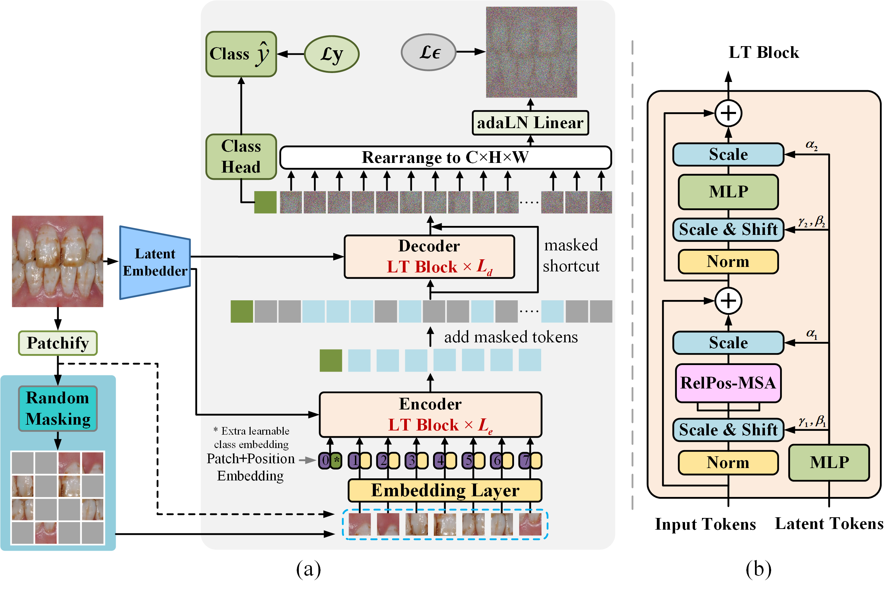

Hi! My name is Hao Xu (徐豪). I am currently pursuing on the M.S. degree in Computer Science & Technology from Guizhou University. I graduated with a B.S. degree in Computer Science & Technology from Chengdu University in 2022. Currently, I am involved in a regional project with National Natural Science Foundation of China, entitled Intelligent Detection and Recognition of Skeletal Lesion Images of Endemic Fluorosis in Guizhou Province. I do research in deep learning, computer vision, and medical image processing. Welcome to communicate with me!
News 📝
Click to expand
-
✌Master
Publications 📖

G2ViT: Graph Neural Network-Guided Vision Transformer Enhanced Network for retinal vessel and coronary angiograph segmentation
Hao Xu†, Yun Wu✉,
📘Neural Networks 2024
💡SCI Q1 💡CCF-B 💡IF: 7.8



Description of symbols
- ✉ : Corresponding author
- † : Co-first author
- 📘: Journal
- 📕: Conference
- 📙: Others
Experience 🏃♂️
- 👨🎓 Guizhou University
- Sep. 2022 - Jun. 2025 (Expected)
- Master of Science in Computer Science & Technology
- Supervisor: Prof. Yun Wu
- 🎖 Nov. 2023, Second Prize of Guizhou Province in the 18th The Challenge Cup.
- 🎖 Sep. 2023, Guizhou University Master Scholarship.
- 👨🎓 Chengdu University
- Jun. 2018 - Jul. 2022
- Bachelor in Computer Science & Technology
- 🎖 Jun. 2022, Outstanding Graduates of Chengdu University.
- 🎖 Sep. 2021, National Encouragement Scholarship of China.
- 🎖 Sep. 2019 and 2020, Chengdu University Scholarship.
- ✌️ Sep. 2019, 2020, and 2021 Outstanding Member and Cadre of the CCYL.
- ✌️ Sep. 2019 and 2020, Outstanding Student Cadre of Chengdu University.